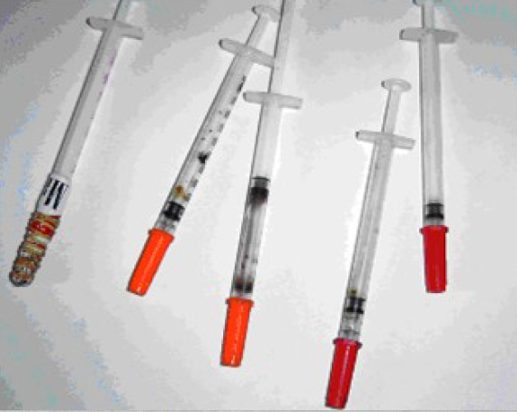

Penggunaan Narkoba Berdasarkan
Tingkat Pendidikan
Oleh:
Albert Halimka 161110820
Calvin Bagasta 161111655
Harvey Kristanto 161110188

Narkoba
Narkotika adalah zat atau obat yang berasal dari tanaman atau bukan tanaman baik sintetis maupun semi sintetis yang menyebabkan penurunan atau perubahan kesadaran, hilang rasa, mengurangi sampai menghilangkan rasa nyeri dan dapat menimbulkan ketergantungan.
Jenis-jenis narkoba
1. Opiat / Opium
Opiat atau Opium adalah bubuk yang dihasilkan langsung oleh tanaman yang bernama poppy / papaver somniferum dimana didalam bubuk haram tersebut terkandung morfin yang sangat baik untuk menghilangkan rasa sakit dan kodein yang berfungsi sebagai obat antitusif.
2. Heroin
Heroin adalah keturunan dari morfin atau opioda semisintatik dengan proses kimiawi yang dapat menumbulkan ketergantungan / kecanduan yang berlipat ganda. Heroin dipakai oleh para pecandunya dengan cara menyuntik heroin ke otot, kulit / sub kutan atau pembuluh vena.
Cara Menggunakan Heroin

3. Kokain / Cocaine Hydrochloride
Kokain adalah bubuk kristal putih yang didapat dari ekstraksi serta isolasi daun coca (erythoroxylon coca) yang dapat menjadi perangsang pada sambungan syaraf dengan cara / teknik diminum dengan mencampurnya dengan minuman, dihisap seperti rokok, disuntik ke pembuluh darah, dihirup dari hidung dengan pipa kecil.
4. Ganja / Mariyuana / Kanabis
Mariyuana adalah tanaman semak / perdu yang tumbuh secara liar di hutan yang mana daun, bunga, dan biji kanabis berfungsi untuk relaksan dan mengatasi keracunan ringan (intoksikasi ringan).
Penggunaan Narkoba?
- Ingin Terlihat Gaya
- Ikut-Ikutan
- Solidaritas Kelompok / Komunitas / Genk
- Coba-Coba / Ingin Tahu
- Ingin menyelesaikan dan melupakan masalah
Dampak Narkoba
Dampak fisik
Kerusakan pada jantung, otak, hati, sistem pencernaan, tertular penyakit HIV / AIDS, Hepatitis B & C, sifilis
Dampak Psikologi (kejiwaan)
- Depresi mental
- Gangguan jiwa berat atau psikotik
- Meyebabkan bunuh diri
Dampak Sosial
- Tidak perduli terhadap orang lain, sering terlibat dalam tindakan kriminal dan kekerasan
- Menunjukkan sikap tidak peduli dan jauh dari keluarga
Bullet List
Powered by bespoke-bullets
- Bullet 1
- Bullet 2
- Bullet 3
Named Route
Powered by bespoke-hash
Look up! This route has been named with a data-bespoke-hash attribute.
Just the beginning…
- Edit HTML markup in src/index.html
- Edit Stylus styles in src/styles/user.styl
- Edit JavaScript in src/scripts/main.js
- Enjoy! :) -@markdalgleish